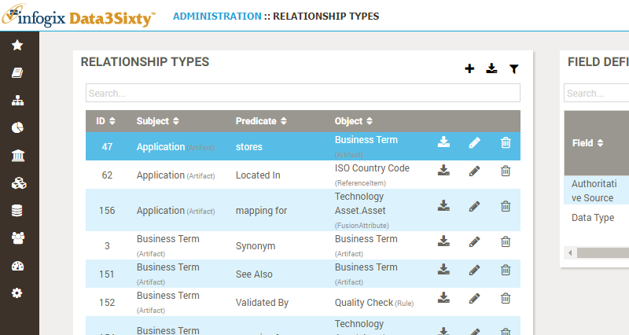
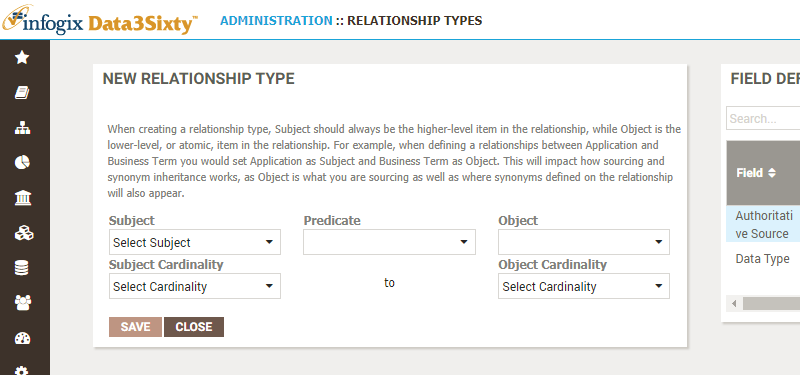
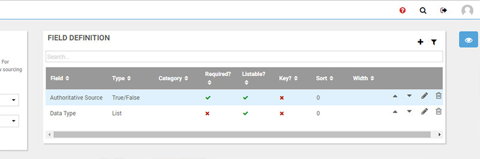
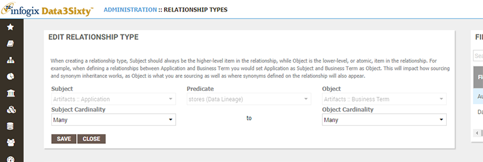

|
|
Establishing relationships
Note: If you are not already familiar with asset relationships you should first check out the User Guide topic Defining relationships between assets.
It is the responsibility of the system administrator to define and maintain a set of relationship types which can be used to link various assets in the system. A relationship ties two artifacts together, using a predicate as a link between the two artifacts, see Establishing predicates.
For example, take the two artifact types; "Report" and "Business Term", say you have a Report which contains a particular Business Term, then "Report contains Business Term" is an example of a relationship. The term that links the two artifacts, the predicate, in this case is "contains".
Tip: When creating a relationship type, the subject should always be the higher level item in the relationship, compared to the object.
Browsing relationship types
Choose Administration > MetaModel > Relationships to view a list of existing relationship types:

Creating relationship types
You can click the Add button to create a new relationship type. The New Relationship Type panel appears:

Select a Subject asset type, e.g. Artifacts :: Reports.
Select the Predicate, e.g. Contains (Data Lineage).
Select an Object asset type, e.g. Artifacts :: Business Term.
Specify the Subject Cardinality and the Object Cardinality. The cardinality is the numeric limitations of one data asset compared to another. For example, one report can contain many business terms, so in this example, you would select One to Many.
Click Save to create the new relationship type and return to the list.
Field definition
For the selected relationship type, the Field Definition table on the right is available to determine which fields should be displayed and available to populate for this type of relationship:

Please refer to the following topic Defining fields on asset types, for full details on editing the fields associated with an relationship type.
Editing relationship types
You can click the Edit button next to a relationship type to modify it, using the Edit Relationship Type panel:
